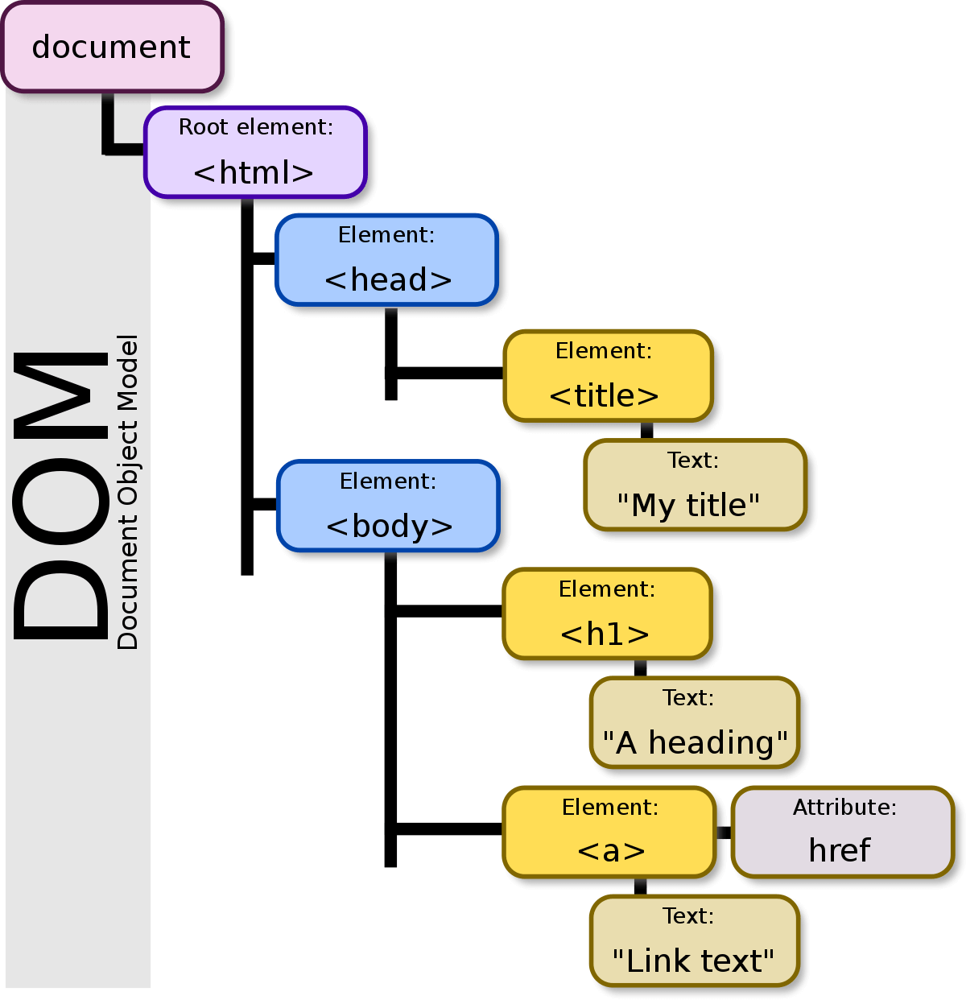

-
DOM / DOCUMENT OBJET MODEL
On peut schématiser le DOM comme un arbre généalogique que l'on appel l'objet "window" ou l' objet global.
Il contient un ensemble de paramètres représentant les éléments contenus dans une page web
et dont l'objet "document" est le point d'origine / la racine.
Pour y accéder il suffit de taper dans la console "window.document" ou "document".
REPRESENTATION GRAPHIQUE DU DOM
 -
NOTION DE CONTEXTE GLOBAL D'EXECUTION
Avant même que l'on ai codé quoi que ce soit, Javascript crée en arrière plan un environnement global de travail.
Celui-çi inclut la création de l'objet global "window" ainsi que du mot clé "this" dont nous allons parler plus loin.
Ce procédé est aussi appelé la phase de création (creation phase).
Lors de cette phase, avant même d'avoir codé une ligne de code, Javascript crée et alloue un espace mémoire dans l'objet global
qui permettra de mémoriser nos fonctions et variables. On peut le schématiser comme le cache mémoire
d'un ordinateur, ou encore le local storage de notre navigateur web.
La seconde phase après la création est la phase d'exécution (execution phase).
Il s'agit de la phase où notre code s'exécute et où un la notion de hissage (hoisting) entre en action. -
NOTION DE HOISTING - HISSAGE/LEVAGE
Lorsque l'on déclare des fonctions ou/et des variables il est important de garder à l'esprit la notion de "hoisting".
Qu'est ce que c'est?
C'est la capacité à enregister dans la mémoire de l'objet global les fonctions et variables que l'on a déclaré.
Pour résumer, une fois déclarées dans notre fichier js, il y'a une lecture passive
qui va les garder en mémoire dans l'objet global.
elles restent accessibles à tout moment par l'intermédiaire de la console
et sont visibles dans l'objet global "window".
Source MDN:
une définition stricte du hissage suggère que les déclarations de variables et de fonctions
sont déplacées physiquement en haut de votre code, mais ce n'est pas ce qui se passe en fait.
A la place, les déclarations de variables et de fonctions sont mises en mémoire
pendant la phase de compilation, mais restent exactement là où vous les avez tapées dans votre code.Soit une fonction simple "sayHi()":
1 - Appel de la fonction avant la déclaration
sayHi();
2 - Déclaration de la fonction:
function sayHi(){
console.log("Hello");
}
3 - Une lecture passive de la fonction s'effectue lorsque l'on sauvegarde (CTRL+S)
le fichier Javascript, ce qui entraine par la même occasion la mémorisation de la fonction.
4 - La console affiche le message "Hello".ATTENTION: LES VALEURS DES VARIABLES NE SONT PAS MEMORISEES, JUSTE LEUR DECLARATIONS
!!!Rappel!!!
Déclaration d'une variable:
let mail;
const nom;
Affectation d'une valeur à la variable:
let mail = 10;
const nom = "Rick";
A la différence des fonctions, au moment où l'on sauve (CTRL+S)
seul l'information sur le nom de la variable (sa déclaration) est enregistré en mémoire.
L'objet global est conscient de son existence mais n'a pas connaissance de la valeur.
Cela signifie que si l'on tente d'afficher le contenu d'une variable
avant que sa valeur ait été attribuée, nous obtiendrons un message d'erreur.
console.log(nom);
const nom = "Rick";
Uncaught ReferenceError: Cannot access 'nom' before initialization
const nom = "Rick";
console.log(nom);
La console affichera bien la valeur de la variable nom, pas de message d'erreur. -
CIBLER UN ELEMENT DU DOM
AVEC "GETELEMENTBY" qui va retourner une "HTMLCollection" dans la console.
1 - Selectionner un ou plusieurs éléments par leur nom de balise:const headers = document. getElementsByTagName( "h2");
2 - Sélectionner un ou plusieurs éléments par leur nom de classe:
const list = document. getElementsByClassName( "paragraphe");
3 - Sélectionner un élément par son ID:
const section1 = document. getElementById( "liste");
AVEC "QUERYSELECTOR" qui va retourner une "NodeList" dans la console.
On utilise les selecteurs CSS pour identifier ce que l'on veux cibler: (.classe) / (#Id) / (balise)
1 - Sélectionner un élément par son nom de balise:
!!! Si plusieurs éléments h2 existent, celui qui s'affichera dans la console sera le premier rencontré en partant du haut vers le bas. !!!const header = document. querySelector( "h2");
2 - Selectionner tous les éléments portant le même nom de balise:
const headers = document. querySelectorAll( "h2");
3 - Sélectionner un éléments par son nom de classe:
!!! Si plusieurs éléments portent le même nom de classe, celui qui s'affichera dans la console sera le premier rencontré en partant du haut vers le bas. !!!const liste = document. querySelector( ".paragraphe");
4 - Selectionner tous les éléments portant le même nom de classe:
const listeAll = document. querySelectorAll( ".paragraphe");
5 - Sélectionner un élément par son ID:
const section1 = document. querySelector( "#intro");
PS: LA METHODE QUERYSELECTOR EST UN PEU PLUS LENTE A S'EXECUTER QUE GETELEMENTBY.
Quelques exemples:
const header3 = document. querySelector( "h2.item");
dans cet example, on cible une balise h2 qui porte le nom de class "item".
const lienSite1 = document. querySelector( "#liste a");
dans cet example, on cible un lien se trouvant dans un élément ayant pour ID "liste". -
HTMLCollection Vs NodeList
HTMLCollection:
const collectionArticles = document. getElementsByClassName( "article");
Sélection de tous les éléments ayant pour classe "article".Si l'on effectue un console log, cela nous affichera une "HTMLcollection" contenant l'ensemble des éléments ayant pour classe "article".
HTMLCollection { 0: li.article, 1: li.article, 2: li.article, 3: li.article, 4: li.article, 5: li.article, 6: li.article, length: 7 }
"li.article" est aussi appelé un node de type élément. Il s'agit des balises HTML.
HTMLCollection n'affiche que des nodes de types élément, il ne peut pas en afficher d'autres.
Si l'on souhaite modifier le contenu d'une balise HTML avec Javascript, il faut le faire via une HTMLCollectionNodeList:
const nodeArticles = document. querySelectorAll( ".article");
Sélection de tous les éléments ayant pour classe "article".Si l'on effectue un console log, cela nous affichera une "NodeList" contenant l'ensemble des éléments ayant pour classe "article".
NodeList(7) [ li.article, li.article, li.article, li.article, li.article, li.article, li.article ]
NodeList peut afficher différents types de nodes: élément node, text node, comment node, etc..
Example:
const nodeArticles = document. querySelector( ".liste-p");
console.log(nodeArticles.childNodes);
childNodes demande à afficher les nodes enfant de l'élément ciblé(nodeArticles).
NodeList(27) [ #text, li.article, #text, li.article, #text, li.article, #text, li.article, #text, li.article, … ]!!! POUR ACCEDER UNIQUEMENT AUX "NODES ELEMENTS" DEPUIS UNE NODELIST, ON UTILISE LA METHODE "CHILDREN" SUR L'ELEMENT CIBLE !!!
Example:
console.log(nodeArticles.children);
HTMLCollection { 0: li.article, 1: li.article, 2: li.article, 3: li.article, 4: li.article, 5: li.article, 6: li.article, 7: li, 8: li, 9: li, … }
ON PEUT DONC UTILISER FACILEMENT QUERYSELECTOR POUR AFFICHER UNE HTMLCOLLECTION -
La suite arrive bientôt, en cours d'intégration.